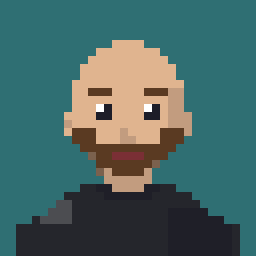
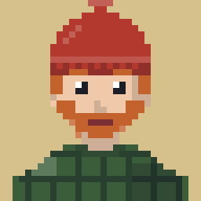
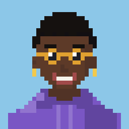

Unify Polymarket, Limitless and Myriad in one interface. Объединить Polymarket, Limitless и Myriad в одном интерфейсе.
The product serves two real user types with opposite needs. Продукт обслуживает два реальных типа пользователей с противоположными потребностями.
Polymarket, Limitless, and Myriad each solve only part of the task for the audience above — none of them combines market discovery, platform comparison, and native trading in one interface. Below are two places where the difference is most visible: the market page and market creation. Polymarket, Limitless и Myriad решают лишь часть задачи для аудитории выше — ни один не объединяет знакомство с рынками, сравнение платформ и нативную торговлю в одном интерфейсе. Ниже — два места, где разница заметнее всего: страница рынка и создание рынка.
Problem: Polymarket’s order book requires scanning 40+ rows line by line, digits aren't aligned. Solution: tabular figures (tnum) align probability and volume into columns — the pattern reads in a second, without line-by-line scanning. Проблема: ордербук Polymarket требует построчного сканирования 40+ строк, цифры не выровнены по разрядам. Решение: табличные цифры (tnum) выравнивают вероятность и объём по колонкам — паттерн считывается за секунду, без построчного чтения.
Problem: competitors put every field into one long form, with no structure and no hints. Solution: the same single page, split into two clear blocks — Event and Predict — with counters, examples and a separate Predict Setup panel for the reward and share. Проблема: у конкурентов все поля свалены в одну длинную форму: без структуры и подсказок. Решение: та же одна страница, но разбитая на два понятных блока — Event и Predict — со счётчиками символов, примерами и отдельной панелью Predict Setup для награды и доли.
The competitor analysis showed that Polymarket, Limitless and Myriad drop a visitor straight into dense market data. Someone who arrives for one market needs context first: what is happening here, and which markets matter. So the home feed leads with discovery, and depth comes after the first click. Анализ конкурентов показал: Polymarket, Limitless и Myriad сразу бросают посетителя в плотные данные рынка. Тому, кто пришёл ради одного рынка, сначала нужен контекст: что здесь происходит и какие рынки важны. Поэтому главная лента начинается с открытия рынков, а глубина идёт после первого клика.
Problem: a flat list of individual markets has no hierarchy — you can’t see what matters without clicking. Solution: Top Narrative groups markets by category, and an F-pattern layout surfaces name, volume and probability at once. Проблема: плоский список отдельных рынков не даёт иерархии — без клика не видно, что важно. Решение: Top Narrative собирает рынки по категориям, а F-образная раскладка сразу показывает название, объём и вероятность.
The Home Feed with Top Narrative is the central solution of this case (see “Insight”). Below are the other screens that close the loop — from search to creating your own market. Главная лента с Top Narrative — центральное решение кейса (см. «Инсайт»). Ниже — остальные экраны, которые замыкают путь от поиска до создания собственного рынка.
The market feed is a grid of cards of two types: yes/no markets show a probability gauge with Yes and No buttons, multi-outcome markets list the outcomes with their percentages and Yes/No for each. Every card shows volume, the source (Polymarket) and a favorites star. UX decision: the probability is shown the way each market type reads best — a gauge for a single question, a list for several outcomes. Лента рынков — сетка карточек двух типов: у рынков «да/нет» вероятность показана шкалой с кнопками Yes и No, у рынков с несколькими исходами — список исходов с процентами и Yes/No у каждого. На каждой карточке видны объём, источник (Polymarket) и звезда избранного. UX‑решение: вероятность показана так, как лучше читается каждый тип рынка — шкала для одного вопроса, список для нескольких исходов.
One page, two blocks: Event and Predict. Required fields are marked with an asterisk, text fields show character counters (0/120, 0/1500) and tags are limited to four. UX decision: every field carries its limit or an example right inside it (for instance, a sample question), and the money side — reward, share and Connect Wallet — lives in a separate Predict Setup panel on the right. Одна страница, два блока: Event и Predict. Обязательные поля отмечены звёздочкой, у текстовых полей есть счётчики символов (0/120, 0/1500), тегов можно не больше четырёх. UX‑решение: у каждого поля лимит или пример прямо внутри (например, образец вопроса), а денежная часть — награда, доля и Connect Wallet — вынесена в отдельную панель Predict Setup справа.
Every key screen was designed for two form factors and two themes from the start — not an afterthought adaptation, but part of the system from day one. Каждый ключевой экран спроектирован сразу под два форм-фактора и две темы — не адаптация постфактум, а часть системы с самого начала.
Polyranger is live at polyranger.com. As the only designer on the project, I worked with the development team from wireframes to handoff: a prediction market aggregator with a trading interface, a shared design system, desktop and mobile versions, light and dark themes. Polyranger работает на polyranger.com. Как единственный дизайнер проекта, я работал с командой разработки от вайрфреймов до передачи в разработку: агрегатор prediction market с торговым интерфейсом, единой дизайн‑системой, десктопной и мобильной версиями, светлой и тёмной темами.